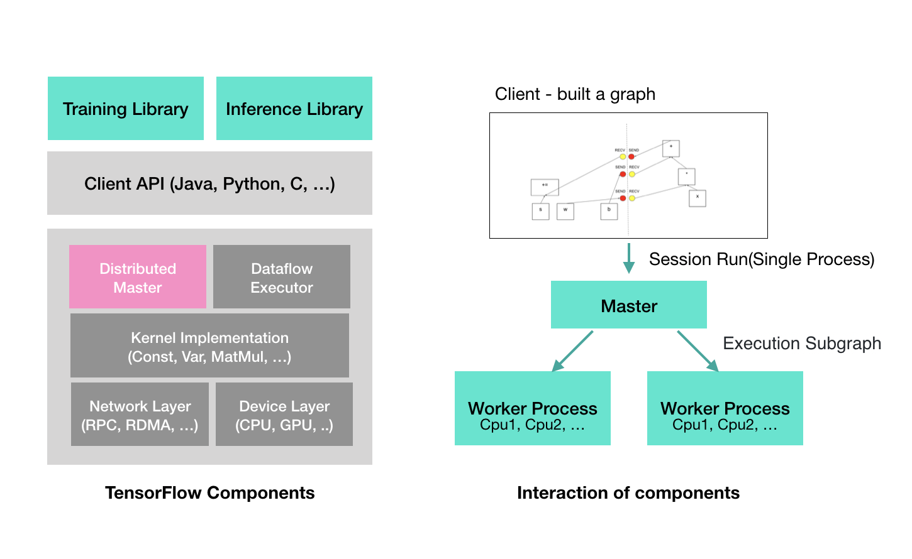

< Ais 텐서플로우 아키텍처 2020-03-29 텐서플로우는 큰 규모의 분산 기반의 학습과 추론을 고려해 설계 됐습니다. 새로운 기계 학습 알고리즘이 나오더라도 이를 지원할 수 있으며, 시스템 레벨의 최적화도 지원합니다. 다음 그림은 텐서플로우의 아키텍처입니다.  왼쪽은 텐서플로우를 구성하는 컴포넌트들에 대한 그림이며, 오른쪽은 텐서 플로우가 어떠한 방식으로 컴포넌트간의 데이터를 주고 받으면서 실행 되는지를 나타내는 그림입니다. < 한글 준말의 규칙성 Roberta >